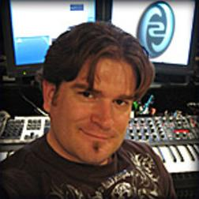
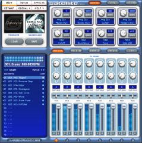

Biography

Background
Midihead lives in Thousand Oaks, CA. He is married with four children. Midihead is a member of the Church of Jesus Christ of Latter Day Saints. His music reflects his political, personal, and religious beliefs.
Midihead has a limited official biography, and likes to produce music under an alias. He believes that information and photos of himself distracts from the music he produces.
Interview with Midihead
[Q] Describe your early life and interests outside of music.
[MB] I was born in Twin Falls, Idaho and am the oldest of 9 children. I enjoyed video games (still do) growing up and cut my teeth on Asteroids, Pac Man, and Defender when there were video arcades in every 7-11. Side note: I try not to play video games as much these days because I have so much to do but I still love them! I love to hike and camp and enjoy being with nature, especially when I can share this love with my family.
[Q] What formal education do you have? What skills are you proud of besides music composition?
[MB] I attended Utah Valley State College but did not get any degree (So I don't know if this is worth mentioning) I have developed skills in web design, graphic design, sales and marketing, built computers, customer service and public relations as well as managing people and companies. All these skills I learned while working for other people all while trying to build my music career.
[Q] What careers have you been involved in?
[MB] I have been a Radio DJ, Mobile DJ, Dance Club DJ, worked in a record store, worked customer service for retail, worked on a golf course mowing greens, washed windows, managed audio-visual needs for high profile clients in Park City and in Sundance. I have also designed web sites and sold car audio...so, I've tried a lot of different things!
[Q] What do you appreciate about your family?

[MB] I have 5 children who bring me a lot of joy and have taught me the importance of patience and self-sacrifice. I have found a brand new purpose in life since being a husband and father. All my children are musically and creatively gifted, and love to be involved in the performing arts.
[Q] Where do you work from today?
[MB] [I live in] Thousand Oaks, CA and my current career is a Creative Director for [Samplebase,] a sound download commerce site. I also continue to write music for television and myself when I can squeeze in the time.
[Q]Do you have any future plans?
[MB] My future plans are to just keep providing for my family, and keep hoping that if I work really, really hard I will see my hard work pay off...[even] if only through my children.
|